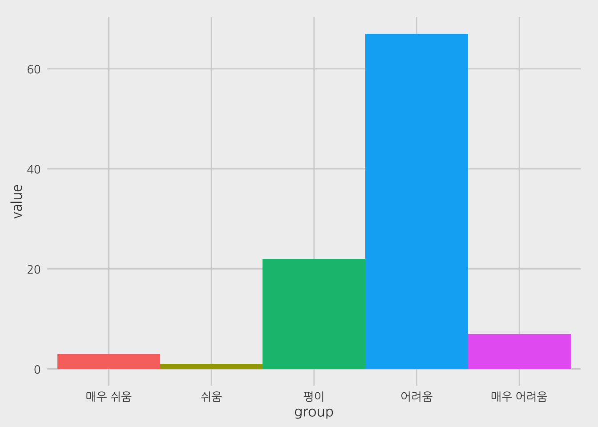

너무 멀리 갈 위험을 감수하는 자만이 얼마나 멀리 갈 수 있는 지 알 수 있다.
T.S. Eliot
현재까지 모아진 1356명의 데이타를 근거로 2017년 피트패스 분석에 따르면, 2016-08-22 14:08:59 현재
2017년 PEET시험에는 총 16272명이 접수를 했으며, 정원대비 경쟁률은 약 9.6 대 1로 집계됩니다. 총 정원은 1695명 입니다.
최종 커트라인은 총점의 68% 정도 (원점수 400점 만점에 272점, 백분위 평균 84%) 맞춰야 할 것으로 보입니다.
하위권 약대에 합격하려면 총점의 70% 정도 (원점수 400점 만점에 280점, 백분위 평균 87%) 맞춰야 할 것으로 보입니다.
최상위권 약대에 합격하려면 총점의 90% 정도(원점수 400점 만점에 360점, 백분위 평균 95%)를 생각하면 됩니다.
전국 수석은 총점의 93% (원점수 400점 만점에 372점, 백분위 평균 100%)로 예상됩니다.

| 학년도 | 응시인원 | 270이상(표준점수) | 260-269점 | 250~259점 | 240~249점 | 230~239점 |
|---|---|---|---|---|---|---|
| 2017 | 16272 | 274 | 432 | 796 | 1051 | 1285 |
| 2016 | 14759 | 215 | 406 | 831 | 1164 | 1130 |
| 2015 | 14706 | 332 | 459 | 760 | 938 | 1440 |
| 연도 | 75-80점 | 70-75점 | 65-70점 | 60-65점 | 55-60점 | 50-55점 | 45-50점 | 40-45점 | 35-40점 | 30-35점 | 30점 이하 |
|---|---|---|---|---|---|---|---|---|---|---|---|
| 2017 | 12 | 217 | 865 | 1852 | 2564 | 2526 | 2470 | 2682 | 2114 | 804 | 101 |
| 2016 | 4 | 165 | 895 | 1707 | 2372 | 2147 | 2109 | 2563 | 1969 | 796 | 32 |
| 2015 | 18 | 229 | 678 | 1661 | 2290 | 2445 | 2381 | 2314 | 1874 | 665 | 151 |
| 연도 | 75-80점 | 70-75점 | 65-70점 | 60-65점 | 55-60점 | 50-55점 | 45-50점 | 40-45점 | 35-40점 | 30-35점 | 30점 이하 |
|---|---|---|---|---|---|---|---|---|---|---|---|
| 2017 | 16 | 261 | 1007 | 1876 | 2261 | 2438 | 2402 | 2806 | 2280 | 796 | 43 |
| 2016 | 14 | 230 | 893 | 1772 | 2208 | 2341 | 2082 | 2380 | 2020 | 759 | 46 |
| 2015 | 16 | 245 | 938 | 1639 | 1903 | 2092 | 2285 | 2721 | 2125 | 689 | 32 |
| 연도 | 80이상 | 75-80점 | 70-75점 | 65-70점 | 60-65점 | 55-60점 | 50-55점 | 45-50점 | 40-45점 | 35-40점 | 30-35점 | 30점 이하 |
|---|---|---|---|---|---|---|---|---|---|---|---|---|
| 2017 | 6 | 93 | 328 | 902 | 1462 | 2338 | 2444 | 2995 | 2730 | 2018 | 777 | 73 |
| 2016 | 10 | 97 | 281 | 749 | 1285 | 2380 | 2133 | 2755 | 2267 | 1899 | 834 | 32 |
| 2015 | 0 | 72 | 315 | 891 | 1373 | 1870 | 2311 | 2691 | 2696 | 1770 | 578 | 100 |
| 연도 | 75-80점 | 70-75점 | 65-70점 | 60-65점 | 55-60점 | 50-55점 | 45-50점 | 40-45점 | 35-40점 | 30-35점 | 30점 이하 |
|---|---|---|---|---|---|---|---|---|---|---|---|
| 2017 | 17 | 251 | 888 | 1806 | 2335 | 2621 | 2732 | 2506 | 2026 | 845 | 134 |
| 2016 | 4 | 175 | 834 | 1630 | 2370 | 2341 | 2418 | 2272 | 1664 | 829 | 183 |
| 2015 | 27 | 281 | 781 | 1654 | 1876 | 2425 | 2550 | 2284 | 2019 | 707 | 61 |
| 연도 | 일반화학추론 | 유기화학추론 | 물리추론 | 생물추론 |
|---|---|---|---|---|
| 2017 | 0.52 | 0.50 | 0.59 | 0.56 |
| 2016 | 0.48 | 0.49 | 0.64 | 0.55 |
| 2015 | 0.56 | 0.50 | 0.54 | 0.58 |
중앙대 / 경희대 / 이화여대 / 성균관대 / 조선대 / 전남대 / 인제대 / 경상대 / 부산대 / 계명대 / 충남대 / 연세대 / 동국대 / 차의과대 / 순천대 / 충북대 / 목포대 / 우석대 / 대구가톨릭대 / 영남대 / 경북대 / 가천대 / 한양대 / 삼육대 / 덕성여대 / 가톨릭대
PEETPASS.com은 2017년 PEET 예측에서 최대한 정확하고 과학적인 분석을 제시하겠습니다. 기대해주십시오.